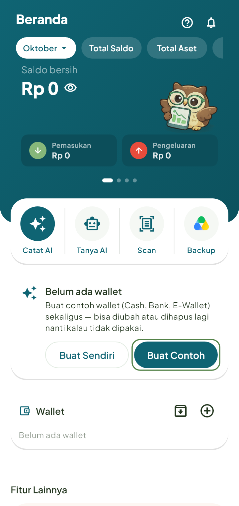
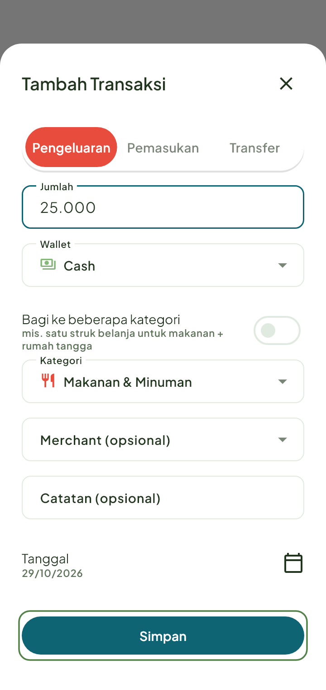
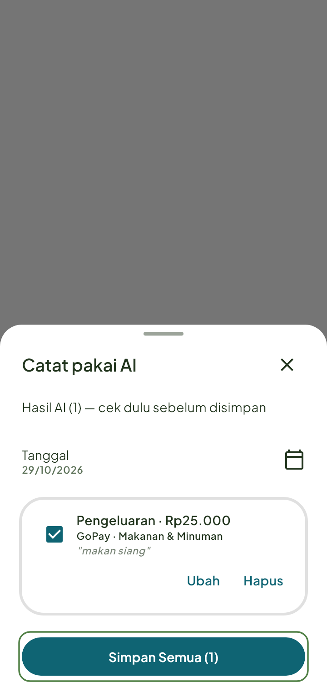
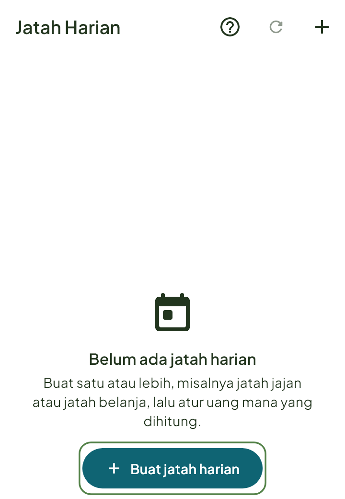

Langkah singkat memakai Artosku. Data kamu tetap tersimpan di HP sendiri.
Mulai dari sini
Empat langkah, sekitar lima menit.
Siapkan wallet
Wallet itu tempat uangmu: tunai, rekening bank, atau e-wallet. Di Beranda, kalau belum ada wallet, ketuk Buat Contoh. Wallet Cash, Bank, dan E-Wallet langsung jadi, dan bisa kamu ubah atau hapus nanti. Mau bikin sendiri? Ketuk Buat Sendiri.

Catat transaksi pertama
Pakai AI: ketuk tombol + di tengah bawah, lalu Catat pakai AI. Ucapkan atau ketik, mis. "makan siang 25 ribu". Cek hasilnya, lalu simpan.
Manual: ketuk +, pilih Pengeluaran, Pemasukan, atau Transfer. Isi Jumlah, pilih Wallet dan Kategori, lalu ketuk Simpan.
Lihat hasilnya di Beranda
Balik ke Beranda. Total saldo kamu sudah ikut berubah.
Langkah berikutnya
Coba Jatah harian (boleh jajan berapa per hari sampai gajian), Anggaran (batas per kategori), dan Backup Google Drive (salinan data di Drive milikmu sendiri).
Mencatat uang
Catat transaksi
Catat uang masuk dan keluar dengan tombol + di tengah. Bisa pilih wallet, kategori, dan merchant.
Ketuk tombol + di tengah bawah, lalu pilih Pengeluaran, Pemasukan, atau Transfer.
Isi Jumlah, pilih Wallet dan Kategori (merchant boleh kosong).
Ketuk Simpan.

Catat pakai AI
Ucapkan atau ketik "makan siang 25 ribu", AI menyiapkan transaksinya untuk kamu cek dulu.
Ketuk tombol + › Catat pakai AI.
Ucapkan atau ketik transaksinya, mis. "makan siang 25 ribu pakai gopay". Boleh beberapa sekaligus.
Periksa hasilnya (jumlah, wallet, kategori), ketuk Ubah kalau ada yang kurang pas.
Simpan.

Anggaran & Jatah
Jatah harian
Hitung boleh jajan berapa per hari sampai gajian, ditemani maskot.
Buka Lainnya › Jatah Harian, lalu ketuk Buat jatah harian.
Isi Nama jatah (mis. Jatah jajan) dan buat.
Ketuk Atur perhitungan untuk memilih uang yang dihitung: wallet atau pocket, tagihan rutin, utang jatuh tempo, setoran tabungan, pemasukan rutin.
Hasilnya (boleh jajan berapa per hari sampai gajian) tampil di Beranda. Matikan Tampilkan di beranda kalau tidak mau.
Mau batas per kategori tiap hari yang kamu atur sendiri? Itu Anggaran harian: Lainnya › Anggaran › tab Harian.

Belum ketemu. Coba kata lain, mis. "wallet", "struk", atau "backup".